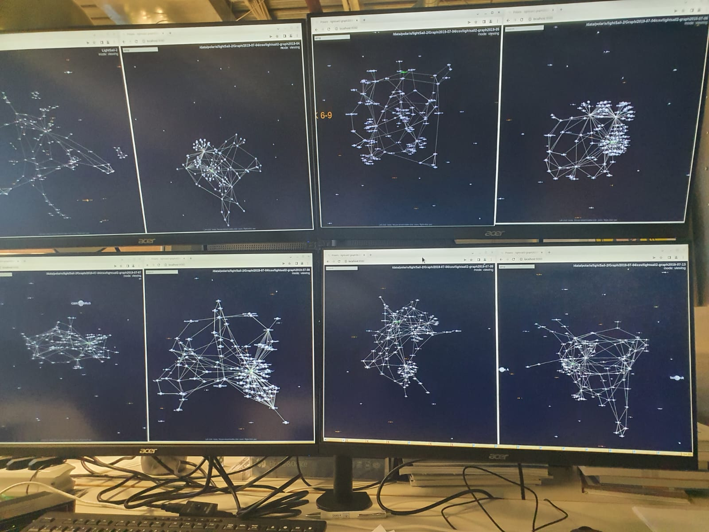

En fin de seconde année à Ynov Nantes, je fais mon stage chez parametry.ai.
Ce stage, d'une durée de 6 semaines, se déroule à Francfort en Allemagne ce qui me permet
de découvrir d'autres méthodes de travail.
J'ai pu acquerir a parametry.ai,de l'experience en machine learning et en data analyse.
Il m'a permis de me former sur pandas et python ainsi que sur d'autres librairies et des logiciels utilisés.
parametry.ai est une start-up qui pour but d'allier l'inteligence artificielle et les opérations spatiales.
parametry se situe a Francfort en Allemagne. Elle fait partie d'un incubateur de start-up.
La start-up a trois missions :
Durant mon stage j’ai pu expérimenter la façon de travailler dans un open-space et surtout dans la culture allemande. Bien que l’open-space était très chaleureux et convivial le ressentie que je m’en suis fait n’est pas parfait. Biens que ce soit très reposant et calmant de pouvoir se déplacer et s’installer là où on le souhaite en arrivant le matin sur les lieux. Je préfère avoir ma bulle privée lorsque je travaille sur certain sujet et l’open-space m’a souvent distrait par les passages des personnes présentes. Mais la partie humaine de la méthode est vraiment un point positif pour moi. J’ai pu rencontrer beaucoup de personnes et échanger avec eux sur leurs domaines professionnels et leurs passions.
Durant ces six semaines j’ai pu renforcer mon attrait pour le machine learning, mais aussi me découvrir une passion pour la data analyse. J’ai pu découvrir certain aspect de data analyse qui va de la recherche sur le sujet que j’ai traité puis la manipulation des données pour avoir un résultat plus utilisable dans le projet sur lequel je travaillait. J’ai aussi pu améliorer mes compétences en python car c’était le langage dans lequel nous développions. J’ai donc formaté des tableaux de donnée pour pouvoir afficher les échanges thermiques des éléments d’un satellite.

En conclusion ce stage de six semaines était très intéressant mais trop court. Je remercie beaucoup mon maitre de stage Red pour avoir pris le temps de m’intégrer dans son équipe et ses projets. J’ai pu découvrir les domaines informatiques du coté professionnel et pouvoir lier ces domaines à ma passion du jeux vidéo. L’équipe était toujours prête à m’épauler en cas de problème et répondre à mes questions.